<!doctype html>
<html lang="de">
  <head>
    <meta charset="utf-8">

		<title>Stabi Tool Tuesday</title>

		<meta name="description" content="A colaborative learning space for all things DH">
		<meta name="author" content="Roman Kuhn">

		<meta name="apple-mobile-web-app-capable" content="yes">
		<meta name="apple-mobile-web-app-status-bar-style" content="black-translucent">

		<meta name="viewport" content="width=device-width, initial-scale=1.0, maximum-scale=1.0, user-scalable=no, minimal-ui">

    <link rel="stylesheet" href="dist/reveal.css">
    <link rel="stylesheet" href="dist/theme/white.css">
  </head>
  <body>
    <div class="reveal">
      <div class="slides">
         <section data-markdown data-separator="^\n---\n" data-separator-vertical="^\n--\n" data-separator-vertical="^\n--\n" data-charset="utf-8">
          <script type="text/template">
          <!--content goes here-->

          ## Stabi Tool Tuesday
          ### 6 - Netzwerkvisualierung (Gephi) <!-- .element: class="fragment" -->
          07.01.2025

          ---
          ### Tool Tuesday
          Ein kollaborativer Raum, um DH-Methoden und tools zu diskutieren... auszuprobieren... zu experimentieren...

          ...manchmal auch zu scheitern?

          --

          ### no code
          (für den Moment jedenfalls)
     

          --
          
          Folien und weitere Materialien finden sich hier: https://github.com/r0man-ist/tooltuesday

          Die heutigen Folien hier: https://r0man-ist.github.io/tooltuesday/slides/Netzwerkvisualierung.html

          Kontakt: roman.kuhn@sbb.spk-berlin.de

---
### Überblick über die Reihe
jeden zweiten Dienstag

im Moment sieben Termine fest geplant:
* Datenquellen und Schnittstellen
* Datenstrukturierung mit OpenRefine
* OCR/HTR
* Named Entity Recognition (NER)
* Topic Modeling
* **Netzwerkvisualierung (Gephi)**
* Stylometry


--
Orientiert an einer (prototypischen) DH-'pipeline'

Forschungsidee/Forschungsfrage

&#8618; Daten suchen (und finden); Daten generieren

&#8618; Daten aufbereiten

&#8618; Daten auswerten, transformieren

&#8618; Ergebnisse (und neue Daten) publizieren/visualisieren

--
Weitere Termine/Themen bei Bedarf

Bring your own data

---

### Vorab

Gephi

https://gephi.org/users/download/


---
### Netzwerkvisualierung


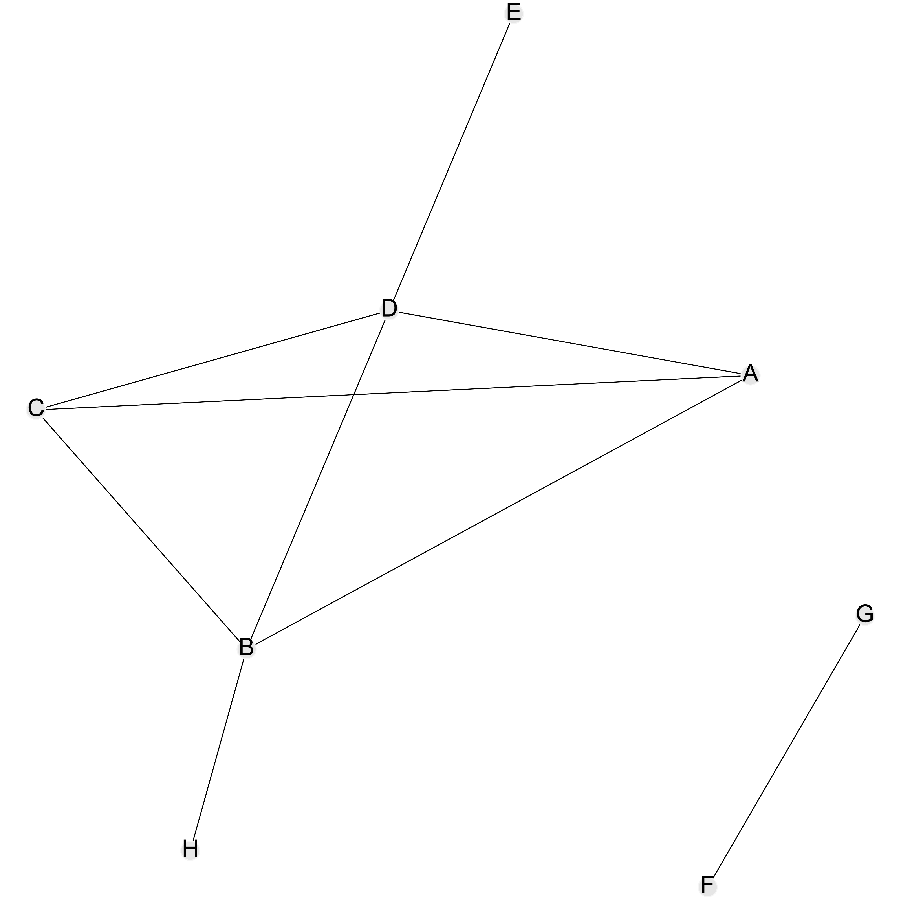

--

### Knoten und Kanten

<pre><code data-trim data-noescape>
  A,B
  A,C
  B,C
  D,A
  D,E
  D,B
  D,C
  F,G
  H,B
</code></pre>

--

### ... dasselbe Netzwerk ...

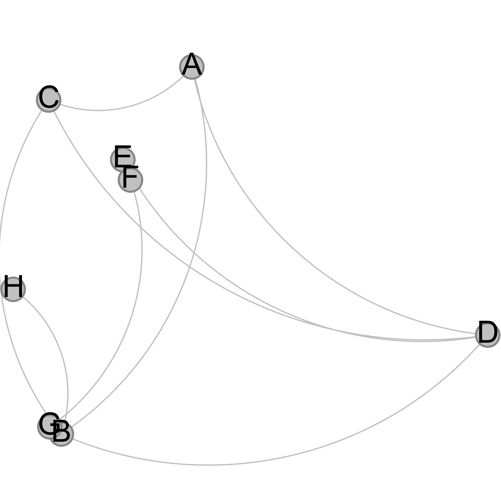

--

### ... erneut dasselbe ...

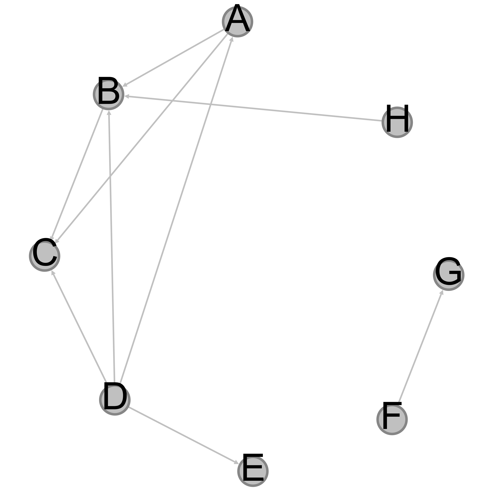

--

### ... again ...

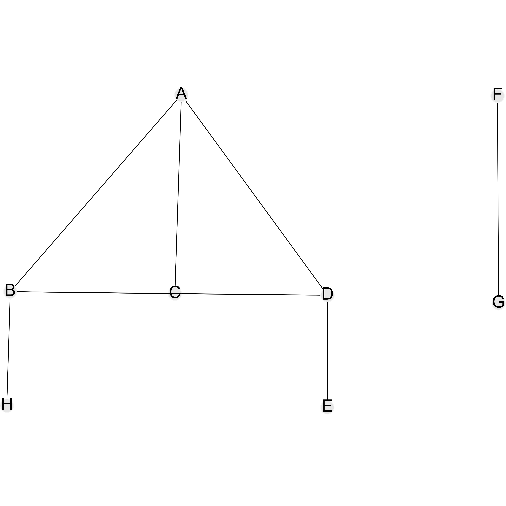

--

### ... and again ...


--

### ... und nochmal

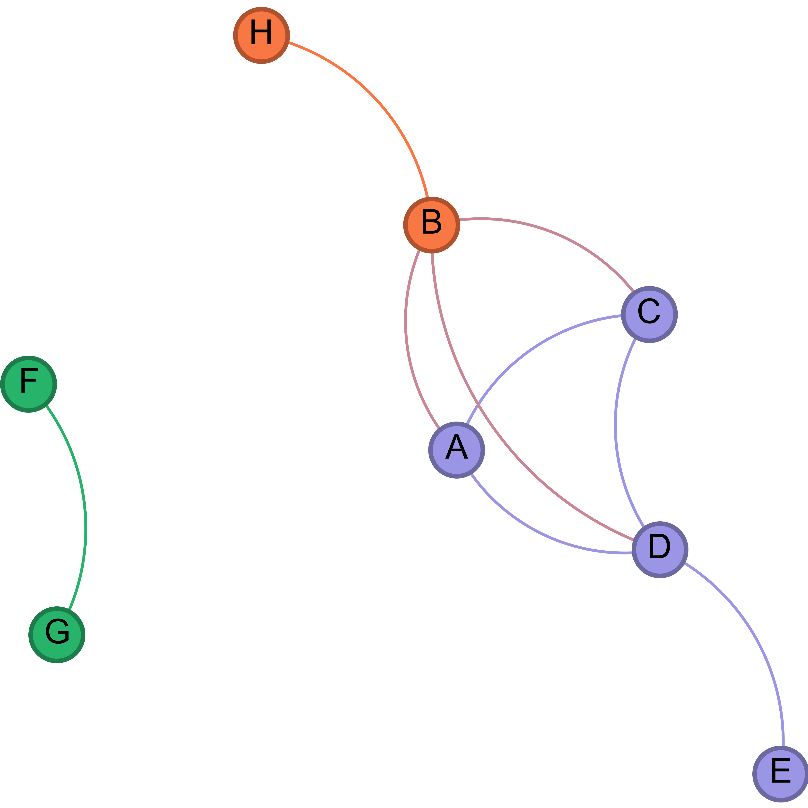

--

### ... dasselbe (?) Netzwerk als bipartites Netzwerk

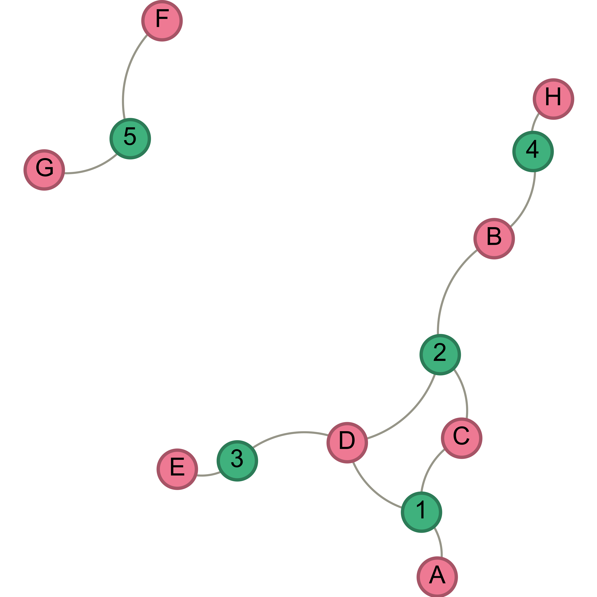

---

## Netzwerke

- Uni- oder n-partite
- Gerichtete, ungerichtete Kanten
- Gewichtete Kanten und/oder Knoten
- Layoutalgorithmen / -verfahren
- Metriken
  - Degree
  - Betweenness
  - PageRank
  - etc.


--

  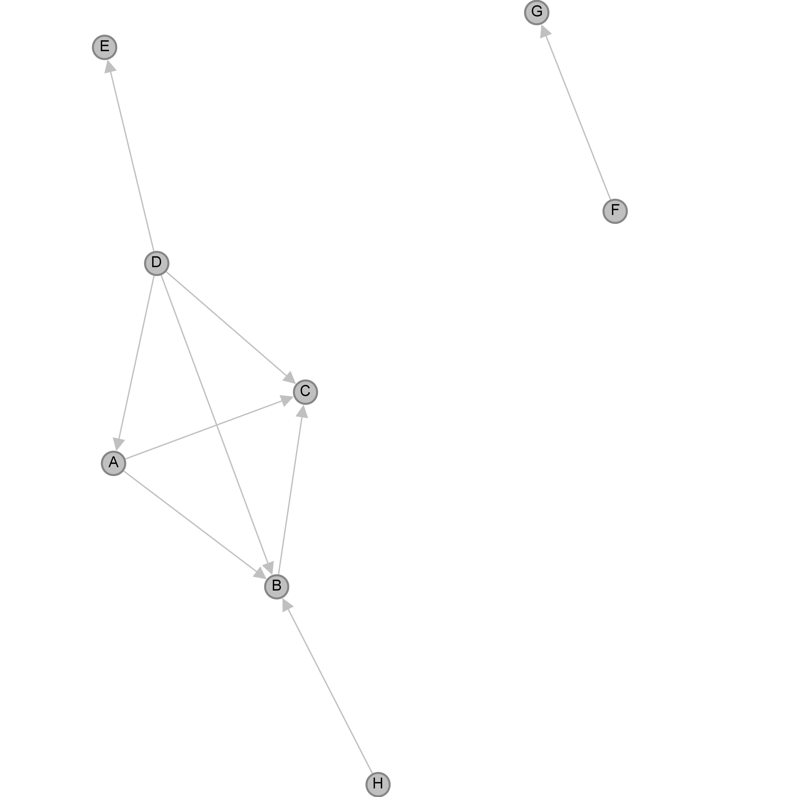

--

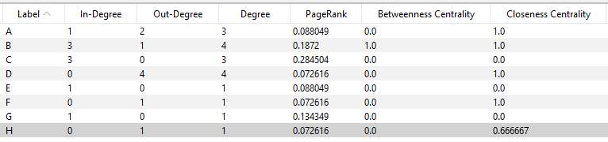


--


Metriken (und ihr sinnvoller Einsatz) sind abhängig davon, welches Netzwerk vorliegt (gerichtet/ungerichtet, bi-/unipartite)

--

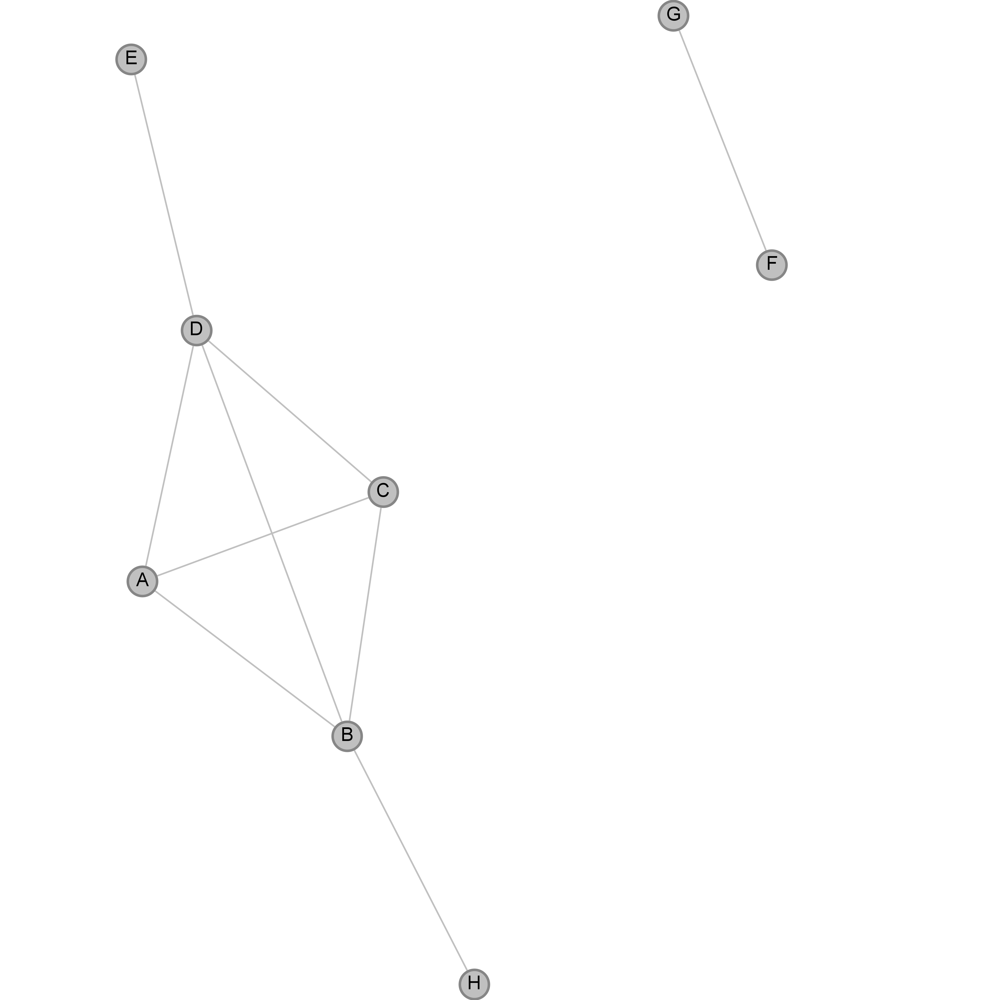

--

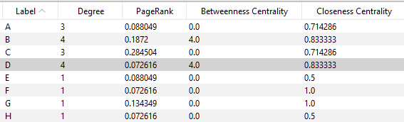


--

### ... erneut dasselbe Netzwerk; Knoten gewichtet nach PageRank

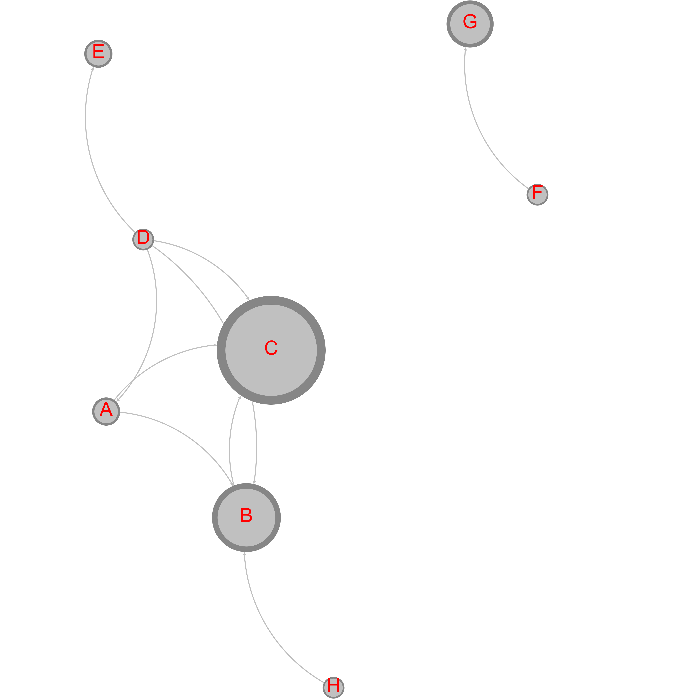


---

### Gephi

[Download](https://gephi.org/users/download/)

[Tutorials und Sammlungen](https://gephi.org/users/)

--

### Voltaires Korrespondenz

1825 [Knoten](https://raw.githubusercontent.com/r0man-ist/tooltuesday/main/Volt_Corresp_nodes.csv) (Personen)
21257 [Kanten](https://raw.githubusercontent.com/r0man-ist/tooltuesday/main/Volt_Corresp_edges.csv) (Briefe)

--


--

### Korrespondenznetzwerk
https://www.martingrandjean.ch/gephi-introduction/

--


--

### Bi-partites Netzwerk

Horaz in Voltaires Korrespondez

190 [Knoten](https://raw.githubusercontent.com/r0man-ist/tooltuesday/main/Volt_Horaz_nodes.csv) -- 123 Personen, 67 Texte
450 [Kanten](https://raw.githubusercontent.com/r0man-ist/tooltuesday/main/Volt_Horaz_edges.CSV)

--

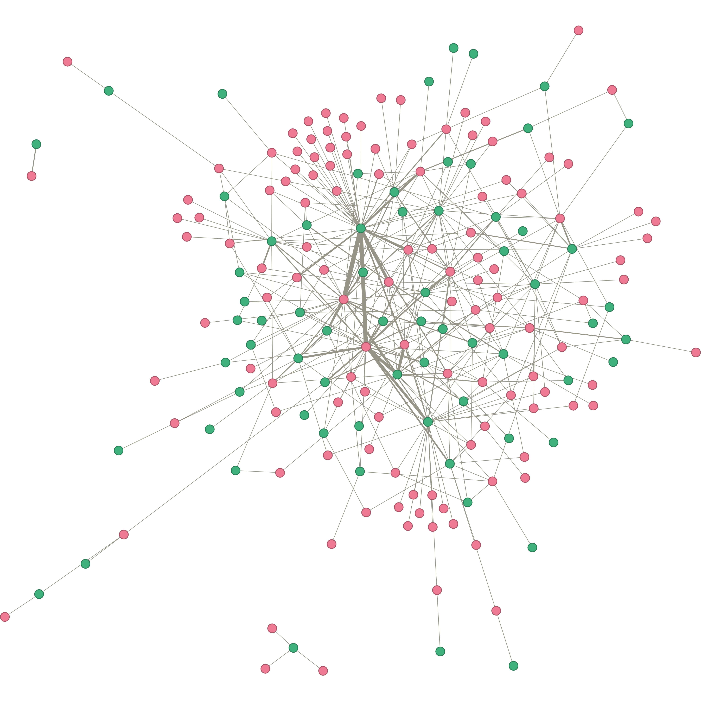

---

### Ressourcen

https://www.martingrandjean.ch/gephi-introduction/
https://book.archnetworks.net/
https://historicalnetworkresearch.org/
https://historicalnetworkresearch.org/external-resources/
https://www.zotero.org/groups/209983/historical_network_research

--

### Einführung
<a href="https://doi.org/10.1017/9781108866804" target="_blank">
  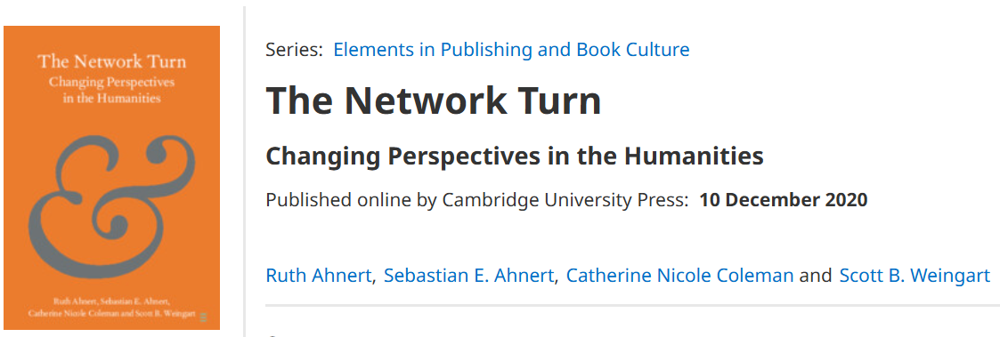
  <div class="caption">
    <p>Ahnert, Ahnert, Coleman, Weingart: The Network Turn</p>
  </div>

--

### Code

<a href="https://igraph.org/">igraph</a> (R, python)

<a href="https://networkx.org/">NetworkX</a> (python)


---

## Danke für die Aufmerksamkeit


</section>
         
        </script>
        
      </div></div></body>
    </div>
    <script src="raphael-min.js"><
      <script src="flowchart-latest.js"></script>
    <script src="dist/reveal.js"></script>
    <script src="plugin/markdown/markdown.js"></script>
    
    <script>
      Reveal.initialize({
    plugins: [ RevealMarkdown ]
  });
    </script>
    

  </body>
</html>